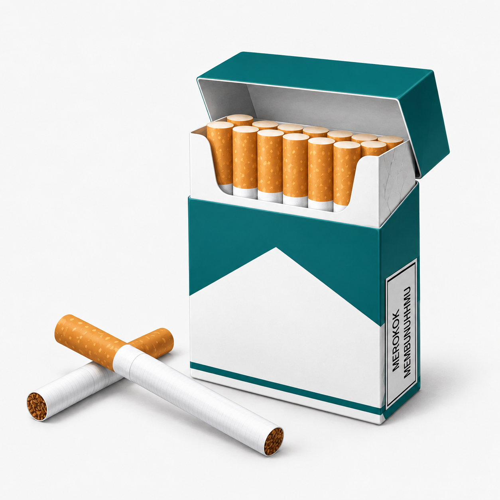

Sudah berapa batang yang kamu habiskan?
Masukkan umur, lama merokok, dan jumlah batang per hari. Kamu bisa lihat total batang, uang yang keluar, dan perkiraan beban ke paru-paru dan jantung.

Yang kamu dapat dari alat ini
Total batang
Jumlah rokok yang sudah kamu habiskan sejak pertama kali mencoba.
Uang yang keluar
Isi harga per bungkus, lalu lihat berapa rupiah yang sudah terbakar.
Beban paru dan jantung
Gambaran kasar dari lama merokok dan jumlah batang harianmu.
Hal yang sering diremehkan
zat kimia ada di asap rokok. Puluhan di antaranya diketahui memicu kanker.
perkiraan umur yang berkurang tiap satu batang, menurut satu studi di Inggris. Angkanya rata-rata, bukan kepastian.
bikin ketagihan. Sulit berhenti itu wajar dan bukan tanda kamu lemah.
Yang terjadi di tubuh setelah berhenti
-
20 menit
Detak jantung dan tekanan darah mulai turun.
-
12 jam
Kadar karbon monoksida di darah kembali normal.
-
2 minggu sampai 3 bulan
Peredaran darah dan fungsi paru membaik.
-
1 tahun
Risiko penyakit jantung koroner turun sekitar setengah dari perokok aktif.
Mau kurangi atau berhenti?
- Tentukan tanggal berhenti dan kasih tahu satu orang terdekat.
- Buang korek, asbak, dan sisa rokok di rumah.
- Kenali jam-jam paling sering ingin merokok, lalu siapkan pengganti seperti jalan kaki atau minum air.
- Kalau kambuh, mulai lagi besoknya. Satu batang tidak menghapus usahamu.